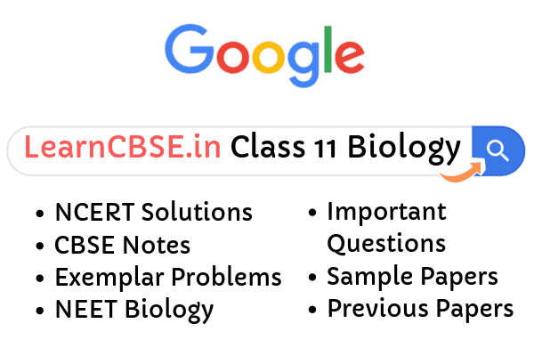

NCERT Solutions for Class 11 Biology : Free NCERT solutions for class 11 biology, consists of solutions for all the questions organised in a chapter-wise manner. The solutions provided here are with respect to the NCERT curriculum. The solutions are provided by our experts, keeping in mind the students’ understanding level. This ensures that the student can easily understand what is being said.
Biology is not as easy to master as the other sciences. One can’t just rote learn some formulae and mechanically apply them on the paper.
NCERT Solutions for Class 11 Biology
The concepts need to be understood and remembered to score well. Especially in class 11, as this will lay the foundation for all the learning to be done in the coming years. Hence, one must make sure that they understand every point mentioned in the NCERT textbook and are capable of answering any question from the material. If they get stuck in the middle, that is where these NCERT solutions come to the rescue.
They are laid out chapter wise and question wise so that it’ll be very easy for the student to navigate and make full use of. The student must try answering the question on their own. and refer to these solutions then to see if they match.
There are 22 chapters in NCERT textbook of Class 11 Biology.
- Chapter 1 The Living World
- Chapter 2 Biological Classification
- Chapter 3 Plant Kingdom
- Chapter 4 Animal Kingdom
- Chapter 5 Morphology of Flowering Plants
- Chapter 6 Anatomy of Flowering Plants
- Chapter 7 Structural Organisation in Animals
- Chapter 8 Cell The Unit of Life
- Chapter 9 Biomolecules
- Chapter 10 Cell Cycle and Cell Division
- Chapter 11 Transport in Plants
- Chapter 12 Mineral Nutrition
- Chapter 13 Photosynthesis in Higher Plants
- Chapter 14 Respiration in Plants
- Chapter 15 Plant Growth and Development
- Chapter 16 Digestion and Absorption
- Chapter 17 Breathing and Exchange of Gases
- Chapter 18 Body Fluids and Circulation
- Chapter 19 Excretory Products and their Elimination
- Chapter 20 Locomotion and Movement
- Chapter 21 Neural Control and Coordination
- Chapter 22 Chemical Coordination and Integration

NCERT Solutions for Class 11 Biology PDF
Class 11 Biology Chapter 1 The Living World
This chapter introduces the student to a wide variety of flora and fauna present in nature. It starts off with asking the question, “what is living?” and then proceeds to talk about taxonomic categories and aids. Students are familiarised to the very important topic of genus and species classification. They are led into the beautiful world of living organisms and get to discover previously unknown things about their habitat and living habits. They are also taught about biodiversity and why conservation of the same is very important. In the present age, this is a value that must be present in all of the youth and this chapter ensures that is inculcated in them.
Class 11 Biology Chapter 2 Biological Classification
This chapter further leads the student into the world of biologic classification. The five – kingdom classification is explained in a lucid, easy to understand manner. They learn about Kingdom Monera, Kingdom Protista, Kingdom Fungi, Kingdom Plantae and Kingdom Animalia. The students will also learn about the older methods of classification used by scientists like Aristotle and Linnaeus, and will get to appreciate how the system has evolved with time.
Class 11 Biology Chapter 3 Plant Kingdom
From this chapter, the students dive into the details of the world so far categorised. They learn about the further classification of the plant kingdom to make it easier to study. Throughout this chapter, they are introduced to new terms such as Gymnosperms, Angiosperms, etc. They also learn about the plant life cycle and alternation of generations. They fully understand the habitat, characteristics and physiology of the complex beings that are plants.
Class 11 Biology Chapter 4 Animal Kingdom
This chapter deals with the most important kingdom, Kingdom Animalia. Though there are differences in form and structure, there are fundamental features that enable us to categorise them conveniently. We learn about the classification of animals into phyla of Porifera, Coelenterata (Cnidaria), Ctenophora, Platyhelminthes, Aschelminthes, Annelida, Arthropoda, Mollusca, Echinodermata, Hemichordata and Chordata. Also, the survival mechanisms of animals, their physiology, habitat and anatomy are dealt with in length. This chapter concludes Unit 1, Diversity in Living Organisms. It has a weightage of 14% in the NEET examination and 7 marks in the final examination.
Class 11 Biology Chapter 5 Morphology of flowering plants
This chapter introduces students to the standards terms and definitions they need to be familiar with. They learn about the morphology of the plant in this chapter. They come to know of the root, the regions of the root, its modifications, etc. and similarly for flowers and stems.
Class 11 Biology Chapter 6 Anatomy of Flowering Plants
This chapter introduces the student to the internal structure and functional organisation of plants. Plant tissue can be broadly categorised into meristematic and permanent. Assimilation of food and storage, transportation of water and minerals, etc are the main functions of the plant tissue. They’ll also learn about the composition and types of plant tissue.
Class 11 Biology Chapter 7 Structural Organisation in Animals
The students have already learnt about a multitude of organisms, both unicellular and multicellular. Unlike in unicellular organisms, multicellular organisms have cells organised into tissues that carry out these functions in a well-organised manner.
The student studies about the morphology and anatomy of Earthworms, Cockroaches and Frogs in detail. This concludes Unit 2, Structural organisation in plants and animals, which has a weightage of 5% in NEET and 12 marks in the final exams.
Class 11 Biology Chapter 8 Cell The Unit of Life
The entirety of biology depends upon cell theory. In this chapter, the students are introduced to this crucial concept. They are introduced to Prokaryotic and Eukaryotic cells. The students learn about the different membrane-bound and non-membrane bound organelles in a cell. They learn about the structure and function of them too with the help of clear diagrams. The students also learn about the contributions made by various biologists in this field over the years.
Class 11 Biology Chapter 9 Biomolecules
In this chapter, the student learns about biomolecules, their functions and structure and why they are important. They will learn about metabolites, biomacromolecules like proteins and enzymes. They’ll get to understand the important role that enzymes get to play in biochemical reactions.
Class 11 Biology Chapter 10 Cell Cycle and Cell Division
Cells are the fundamental units of life. Understanding them is integral to understanding various other concepts in biology.
In this chapter, the student is introduced to the very important concepts of cell cycle and cell division. They learn about the difference between meiosis and meitosis, and the significance of each. They learn about the phases in the cell cycyle, including Interphase, Prophase, Metaphase, Anaphase, Telophase and cytokinesis. This chapter concludes Unit 3, Cell: Structure and functions. It has a weightage of 9% in NEET and 15 marks in the final examination.
Class 11 Biology Chapter 11 Transport in Plants
Plants, unlike animals, do not have motor functions and hence ust rely upon the soil for nutrition and on their roots for taking up the same. This has led to the evolution of a fascinating transportation system in plants involving Xylem and Phloem.
In this chapter, the student learns about the various aspects of the same, including Imbibing, Plasmolysis, Osmosis, Active transport and transpiration.
Class 11 Biology Chapter 12 Mineral Nutrition
In this chapter, students learn to recognise the various minerals essential for a plant’s growth and function. They learn about what categorises a mineral as essential, and about the means of transportation and mechanism of absorption of the same.
They learn about the deficiency symptoms indicating the lack of said minerals too, for a holistic view on the topic. They are also briefly introduced to nitrogen fixation and its significance.
Class 11 Biology Chapter 13 Photosynthesis in Higher Plants
Students are already aware of the basic process of photosynthesis, but fail to apppreciate its complexity due to how its presented. In this chapter, they are introduced to the mechanism in such a beautiful way as to make them fall in love with the subject. They learn about the various steps, including Light reaction, Electron Transport Chain and C4 cycle. They come to know of cyclic and non-cyclic photo-phosphorylation. The importance of NADPH and ATP is also mentioned.
Class 11 Biology Chapter 14 Respiration in Plants
Photosynthesis and Respiration are the two main functions performed by plants. In this chapter, the student is introduced to the latter. They come across new terms and concepts such as Aerobic and Anaerobic respiration, Glycolysis, Fermentation, Electron Transport system and Tricarboxylic Acid Cycle.
Class 11 Biology Chapter 15 Plant Growth and Development
In this chapter, the students focus on the various intrinsic and extrinsic factors that affect a plant’s growth and development.
They learn about phases of plant growth, growth regulators, differentiation, dedifferentiation, redifferentiation, Vernalisation, seed dormancy, etc. They also come to know of the function played by plant hormones in plant growth and development.
This chapter concludes Unit 4, Plant physiology. It has a weightage of 6% in NEET and 18 marks in the final examination.
Class 11 Biology Chapter 16 Digestion and Absorption
In this unit, the student begins to explore human physiology and learn to understand how their own bodies function.
This chapter focuses primarily on Digestion and absorption of the digested food. Digestive system disorders are also briefly discussed. The chapter also includes the various food components essential in our daily diet, and expounds on the problems caused by the deficiency of them.
Class 11 Biology Chapter 17 Breathing and Exchange of Gases
This chapter introduces the student to the concept of breathing and explains how it is different from respiration.
The focus is on the respiratory system and the organs that constitute the same. Exchange of gases like Oxygen and Carbondioxide and their transport is discussed in detail. The students also get a brief overview of repiratory problems, and the conditions that lead to them.
Class 11 Biology Chapter 18 Body Fluids and Circulation
Highly complex beings like humans have comples circulatory system. This topic is dealth with in this chapter.
The students explore the circulatory pathways in humans. They learn about blood and its components, lymph (tissue fluid), Blood groups, etc. They learn about cardiac disorders and also about Electrocardiographs.
Class 11 Biology Chapter 19 Excretory Products and their Elimination
As the students just dealt with gaseous waste in the previous chapter, it is only natural that they’d be curious about the elimination of solid and liquid waste generated by metabolic activities or excess ingestion. Hence, this chapter deals with the excretory system in humans. The students learn about the different components of the excretory system, including the accessory organs. They also learn about the process of urine formation and the regulation of Kidney function. They come to know of the various kidney disorders.
Class 11 Biology Chapter 20 Locomotion and Movement
This chapter introduces the student to various forms of locomotion and movement in both unicellular and multicellular organisms. Muscles and skeletal systems are discussed extensively. This chapter probes into the various voluntary and involuntary muscle actions, the structure and function of muscles, and also the various disorders associated with them, such as gout, osteoporosis and arthritis.
Class 11 Biology Chapter 21 Neural Control and Coordination
In this chapter, the student learns about the central and peripheral nervous systems in humans. They learn about impulse generation and transmission, synapses and reflex action. They learn that the neuron is the fundamental unit of the nervous system. They also get to learn the mechanims of seeing and hearing with the help of clear diagrams.
Class 11 Biology Chapter 22 Chemical coordination and integration
This chapter deals with the endocrine and exocrine glands found in organism. Special focus is on the endocrine system of humans, the hormones secreted by them, the functions of said hormones and the disorders caused by excess or deficit of the same. The students learn about the mechanism of hormone action and also about the feedback mechanism the regulates their production. This chapter concludes Unit 5, Human Physiology. It has a weightage of 20% in NEET and 18 marks in the final examination.
We have tried to provide clear, accurate solutions for all the questions, as 11th and 12th are the most important years in a student’s life. To understand this material, you might want to clear up your 10th grade concepts.